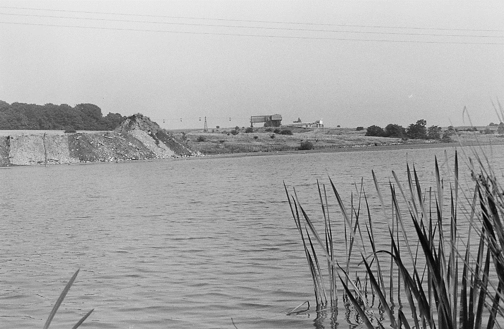
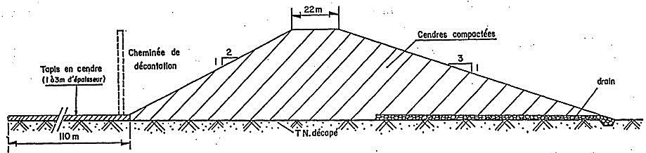
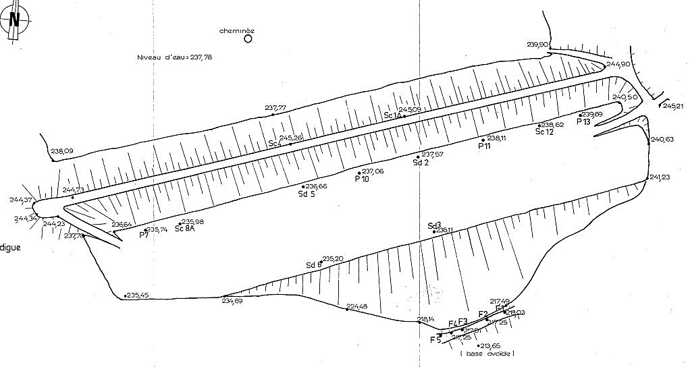
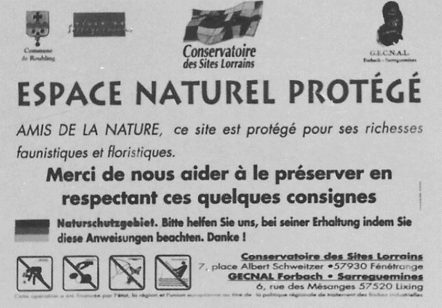
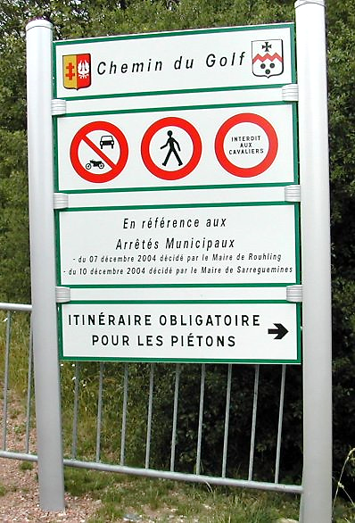
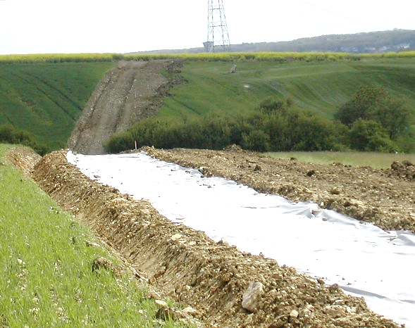
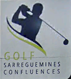

Bassin à suie-Golf
Création d’un bassin à suie
Extrait du document émanant du Bureau de Recherches Géologiques et Minières (BRGM)
Pourquoi un bassin à suie a été créé dans la vallée du ruisseau de Rouhling ?
Au préalable résumons l’origine de la raison de cette création.
Historique de la construction de centrale électrique thermique de Grosbliederstroff.
Elle était située au bord du à . Les études commencent en 1947 et les travaux débutent en 1949, en même temps que ceux de la (Carling).
Le bâtiment est entièrement construit en béton avec remplissage de briques. Les fumées étaient évacuées par deux cheminées de 140 m de haut, à l'époque les plus hautes cheminées d’Europe.
Les groupes entrent en fonction en 1954, le 1er couplage a lieu le 19 février pour le Groupe 1, et le 17 novembre pour le Groupe 2.

La centrale est arrêtée le 1er avril 1987. Elle est déséquipée de ses installations internes par des entreprises de récupération de métaux. La démolition commence en 1990 par le dynamitage des 2 cheminées, le 13 janvier et le 5 février. Le site est en grande partie détruit, seuls subsistent les ateliers. Un élément de l'ancien téléphérique, une benne est également conservée à proximité du site.
Le moyen de transport du charbon est fait par téléphérique long de 13 km. L'installation relie le triage ferroviaire de Marienau (Forbach) au carreau de la centrale. Le débit du téléphérique est de 275 m3/h pour une vitesse de 2,5 m/s.
Historique du bassin à suie
Le bassin de Rouhling servait de base de décantation des cendres volantes de la centrale thermique de Grosbliederstroff. Cette dernière produisait de l'électricité par combustion du charbon du bassin de Lorraine. Les fumées produites par la combustion étaient dépoussiérées avant d'être rejetées dans
L’atmosphère. Les cendres ainsi récupérées étaient, soit commercialisées (utilisation routière ou cimenterie par exemple) soit stockée dans un bassin de décantation.
Le transport des cendres non commercialisé été assurée par un téléphérique. Ces dernières étaient déversées hydrauliquement dans le bassin par gravité. Les eaux de décantation était évacuée par une tour puis par une conduite qui passe sous la digue et de la, recycler vers la centrale ou rejetée dans le ruisseau.
Deux fossés de garde ont été construits autour du bassin pour récupérer les eaux de ruissellement et les évacuer, en contournant la digue vers l'aval. En 1967 des ouvrages de dissipation d'énergie ont été construits dans ces fossés.

Topographie du site
L'ancien bassin de décantation des cendres de la centrale thermique de Grosbliederstroff est situé dans la vallée du ruisseau de Rouhling à environ 1300 mètres à l’aval du confluent avec le Hungerbach et à environ 1500 mètres du village de Welferding, banlieue de Sarreguemines. Le bassin est fermé par une digue implantée au niveau d'un rétrécissement de la vallée.
Construction de la digue
La centrale de Grosbliederstroff a commencé à fonctionner en 1954. Pendant les premières années de fonctionnement, les cendres ont été déversées derrière une petite digue construite à 800 mètres à l'amont de la digue actuelle. La construction de la digue principale a commencé en 1958. Les travaux ont comporté plusieurs phases :
1ère phase de 1957 à 1960
Les cendres en provenance de la centrale sont stockées à sec puis reprises et régalées par couches successives pour monter un corps de digue homogène. Avant le régalage descendre le terrain naturel a été décapé sur environ 1 mètre d'épaisseur sous l'emprise de la digue.
Une cheminée de récupération des eaux décantées est mise en place, ainsi que des drains à la base du corps de digue d'un tapis amont.

De la base de la cheminée part une conduite de forme ovoïde en béton armé de diamètre intérieur à 0,8 mètres et extérieur 1,2 mètre. Cette conduite repose sur le terrain naturel décapé et est recouverte par un écran d'argile d'environ 1 mètre d'épaisseur. Elle suit le fond du thalweg et débouche dans le bassin ouvert de la station de pompage, en pied aval de la digue.
La consistance des drains et des filtres n'est pas connue avec exactitude. Les renseignements obtenus lors de l'expertise des bassins permettent d'aboutir à 2 hypothèses : réseau de drains (hypothèse la plus probable) ou tapis traînant.
Au cours de cette première phase, le corps de digue a atteint la côte 238 avec :
une largeur en crête de 22 mètres et une longueur de 120 mètres
un parement aval avec une pente de 1/3 (1 vertical pour 3 horizontal)
un parement amont avec une pente de 1/2 (1 vertical pour 2 horizontal)
Deux fossés de garde ont été réalisées de façon à empêcher le déversement dans le bassin des eaux de ruissellement des ruisseaux de Rouhling et du Hungerbach.
2ème phase de 1960 à 1967
Les cendres provenant de la centrale de Grosbliederstroff ont été stockés hydrauliquement derrière la digue construite pendant la première phase.
Le bassin ainsi créé étant quasiment plein, il a été décidé de rehausser cette digue jusqu’à la côte 245. Le rehaussement a été réalisé en cendres compactées avec un masque amont en schistes. La largeur en crête de la nouvelle digue est alors de 7 mètres et les parements ont une inclinaison de 1/3.
Des ouvrages en béton dissipateurs d'énergie ont été réalisés dans les fossés de garde afin de protéger ces derniers de l'érosion.
3ème phase de 1967 à 1980
C'est la 2ème phase d'utilisation normale avec remplissage du bassin jusqu’à la côte 238 environ.
En 1979, une expertise détaillée du bassin a été réalisée par le BRGM de façon à définir les éventuels travaux confortatifs à entreprendre et les mesures de surveillance nécessaires pour le maintien en exploitation.
Schéma digue : profil de la digue initiale - coupe schématique du projet
4ème phase de 1980 à 1987
Le fonctionnement du bassin est normal jusqu'en 1983 où le niveau des cendres a commencé à être progressivement augmentée jusqu’à la côte finale 240.
Remarque : le niveau des cendres contre la digue, mesuré en mai 1990 ne dépasse pas la côte 238.
De façon à diminuer les sous-pressions éventuelles dans les niveaux calcaires du substratum du fait de l'augmentation du niveau des cendres dans le bassin, des puits de décompression ont été réalisés en pied de digue en 1983.
5ème phase de 1987 à 1990
L'arrêt de la centrale de Grosbliederstroff entraîne l'arrêt de l'exploitation du bassin au début de l'année 1987.
Les mesures de surveillance n'ont plus été appliquée depuis cette date. Deux contrôles (en avril et juin 1990) ont été à nouveau effectués par le BRGM à la demande des HBL en vue de la cession des terrains à l’Etablissement Public de la Métropole Lorraine (EPML).
Géométrie et constitution de la digue
Un nivellement de la digue et de ses abords, effectué en mai 1990, permet de connaître les côtes de différents points (figure 5)
Cote de la crète : 245
Cote des cendres contre la digue : 238
Cote des cendres sur les bords du bassin : 240
Cote du pied aval : 214
Longueur en crête : 400 mètres
Hauteur totale de la digue : 31 mètres
Surface : 12 hectares environ
Volume 2 millions de m³ (estimation datant de 1979)

Les fondations de la digue sont visibles dans les fossés de garde, dont les flancs montrent les formations marno-calcaire du Muschelkalk.
Le Muschelkalk est constitué de dalles calcaires de 10 à 20 centimètres, parfois 30 à 40 d’épaisseurs, alternant avec des niveaux marneux d’épaisseur comparable, d'une puissance totale d'une cinquantaine de mètres environ. Les calcaires, de texture lithographique ou cristalline sont gris, crème, parfois roux ou bicolores (bleu et beige). Les surfaces des dalles sont souvent ondulées et vermiculées, parfois très planes. Les marnes sont grises ou gris verdâtre pas altération.
L'allure générale des bancs est caractérisée par une valeur de pendage de 15 degrés, orientée N/O – S/E.
Le corps de la digue est constitué de cendres volantes compactées. Les cendres volantes ont été régalées par couches successives de 20 centimètres au plus.
Les dispositions prévues pour étancher l'amont et drainer l'aval de la digue ne ressortent pas clairement des documents rassemblés. Aucun dispositif de drainage du pied aval de la digue n'a été prévu.
Le parement amont, au moins au-dessus de la côte 238, a été recouvert d'une couche de schistes pour protéger les cendres du ruissellement et de l’affouillement par l'eau du bassin. Il est boisé (saules et bouleaux). Le parement aval a été recouvert par 25 centimètres de terre végétale il est recouvert d'herbe.
Requalification du « Bassin à suie »
Pendant plus de 30 ans les cendres de l’ancienne centrale thermique de Grosbliederstroff ont été déversées dans "bassin à suie" se situant sur les territoires de Rouhling et Sarreguemines, en souillant ainsi la nature.
En 1990, dans le cadre de la politique de résorption des friches industrielles, le Bureau de Recherches Géologiques et Minières (BRGM), a eu comme mission le réaménagement du bassin, qu’il a confié à l’Etablissement Public de la Métropole Lorraine (EPML).
L’EPML était chargé de requalifier les lieux comme à l’origine, de remettre les bassins en eau après un curage des cendres, de régler le problème de ruissellement des eaux de pluie, de replanter les essences qui étaient présentes à l’origine et de recréer le chemin de promenade en boucle qui existait avant ces dégradations.
Cet aménagement s’est achevé en 1993. Parallèlement s’était engagée une réflexion sur la destination future des 130 hectares de terrains que les communes avaient racheté aux Houillères du Bassin de Lorraine (HBL), 95 ha sur le ban de Sarreguemines et 35 ha sur celui de Rouhling.
En 1991, une étude a été engagée afin d’en définir la destination. Plusieurs projets avaient été suggérés : une base loisirs et de plein air (pêche, nautisme, baignade, …) ou la création d’un golf et d’une zone naturelle protégée tout en maintenant l’existence du chemin de promenade ouvert au public.
Projet d’aménagement en Golf et zone naturelle protégée
Le 03 septembre 1992, les deux conseils municipaux se sont réunis en mairie de Sarreguemines afin de définir le choix de l’aménagement. Le golf fut le choix des deux communes et la construction fut confiée à la société allemande « Gebrüder HEINZ ».
La « zone naturelle protégée » qui se situe à 90% sur le ban de Rouhling, est la première à être inaugurée, le 20 décembre 1995, et confiée pour sa gestion au « Conservatoire des Sites Lorrains ».
Ce site est un milieu remarquable d’environ 11 ha. Les pelouses et zones humides du Kolmer offrent une bouffée de pleine nature aux visiteurs de passage. Cet ensemble de milieux naturels, pelouses marneuses, mares, boisements, accueille une faune et une flore tout aussi remarquable qu’incroyable. Milieux humides et milieux secs cohabitent pour offrir une diversité biologique exceptionnelle.
En 2004, le gestionnaire, M. GÖRBER, avait demandé la création d’un chemin de contournement d’une partie du parcours et empêchera les promeneurs d’admirer cette superbe « zone naturelle protégée ».
Décision incompréhensible pour les promeneurs.
Autre regret, c’est que le nom de Rouhling ne se trouve sur aucun panneau, alors que le golf, ainsi que « la zone naturelle protégée » se situe sur 35 ha du ban de la commune.
Les travaux du golf étaient sur le point de s’achever quand les orages de juillet 1999 détruisirent une partie de l’aménagement. Mais enfin en mars 2000, les 18 parcours étaient ensemencés et le 17 mai 2000 eu lieu l’inauguration officielle du golf.
Enfin seule l’aire de jeu était terminée, la construction du club house et du restaurant commencèrent. Par la suite, la société du golf de Sarreguemines-Rouhling avait tenté de faire "vivre" ce bel équipement sportif sans jamais atteindre un niveau d’activité suffisant. De même, le restaurant n’a pas vraiment fidélisé une clientèle.
Malgré tous les efforts consentis par les communes de Rouhling et de Sarreguemines, le gestionnaire et propriétaire des lieux, décide en 2012 de renoncer, après environ 12 années d’ouverture du site. En fait, c’est des raisons financières qu’il en est arrivé là à une procédure de liquidation de la société avec licenciement de l’ensemble du personnel.
Il est évident que face à ces événements, les collectivités comme les communes de Rouhling, de Sarreguemines et la Communauté d'Agglomération Sarreguemines Confluences (CASC) ne pouvaient que réagir jusqu’à s’engager à tout faire pour sauvegarder l’aire de jeu. La CASC s’est rapidement déclarée comme acquéreur potentiel car le printemps arrivant, il ne fallait pas perdre de temps. Finalement, en 2013, c’est une initiative privée qui s’est présentée comme la meilleure solution pour reprendre l’activité et la gestion de cet équipement.
M. Patrice AUERT, chirurgien dentiste à Sarralbe et golfeur dans l’âme a pris le risque de s’engager personnellement dans cette aventure. Premier membre du club des joueurs, il a tout de suite eu le soutien de ceux-ci. Cela l’a conforté dans son engagement qui est total car il est persuadé que ce terrain de golf est de qualité et que les utilisateurs seront de plus en plus nombreux. D’ailleurs, plus de 400 licences ont été délivrées et ceci en moins de 2 mois. Des travaux seront bien sur nécessaires et le remplacement des machines à l’entretien se fera progressivement. Les anciens employés ont eu la joie d’être réembauchés et c’est avec enthousiasme que ceux-ci œuvrent sans relâche pour remettre les greens, fairways et practice en état.
Une expérience onéreuse qui n’aura tenu qu’un peu moins de deux ans…

La CASC vient en sauveur !
Le 30/09/2015, en séance plénière, la Communauté d’Agglomération Sarreguemines Confluences (CASC) a décidé d’acquérir auprès de la SCI AUERT Golf Investissement, au prix de 910 000€ HT, le golf de Sarreguemines-Rouhling. Ce faisant, elle rachète tous les terrains et l’ensemble des bâtiments (boutique, club house, hangar à chariots, locaux administratifs et techniques, kitchenette, toilettes, vestiaires, sanitaires, cuisine, restaurant-habitation, hangar à matériels, garages, tous les parcours de golf, les espaces verts boisés périphériques et plans d’eau…).
Dans son exposé, le président Roland ROTH a rappelé l’historique de cet équipement créé à la fin des années 1990. Faisant l’objet d’une liquidation judiciaire à la fin de l’année 2012, le golf avait été racheté par un privé, Patrice AUERT alors que la CASC avait envisagé elle aussi une offre de reprise. Mais voici un an, alors qu’il avait investi 240 000€ supplémentaires, le propriétaire nous a informés qu’il souhaitait interrompre très rapidement cette activité, car elle était incompatible avec sa vie professionnelle. Le président de rajouter ; cet équipement est un outil à vocation économique, touristique et de loisirs, mais aussi un élément d’attractivité pour notre territoire.
Enfin, espérons que le golf de Sarreguemines-Rouhling est résolument tourné vers l’avenir, mais faisons confiance à la CASC, pour que ce projet soit pérenne.





